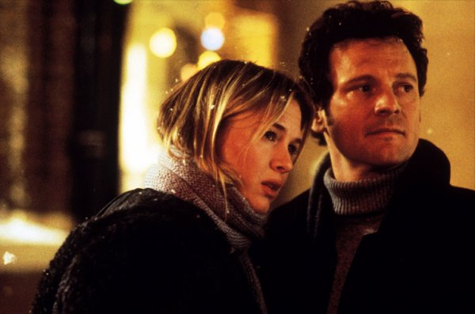

-장르: 드라마/로맨스
-국가: 미국/영국/프랑스
-상영시간: 105분
-관람기준: 18세 이상 관람가
-비디오 출시일: 2002년 2월 23일
-공식 홈페이지
-감독: 샤론 맥과이어
-출연: 르네 젤위거 / 콜린 퍼스 / 휴 그랜트
-각본: 헬렌 필딩
-제작: 팀 베번 / 조나단 카벤디쉬 / 에릭 펠너
-음악: 패트릭 도일
-촬영: 스튜어트 드라이버그
제 일기는 당신께만 보여드릴게요
서른두살의 노처녀 브리짓 존스. 칼로리와의 전쟁에 몰두하고 완벽한 남자를 만나겠다는 희망을 간직한 그녀. 어김없이 새해가 다가오고 그녀는 엄마의 성화로 부모님 댁에서 수다스럽고 참견하기 좋아하는 이웃들과 함께 명절을 보내야 하는데...
Gallery
copyright 1999-2003 Movie World Co.,Ltd. All rights reserved.
Contact webmaster for more information.